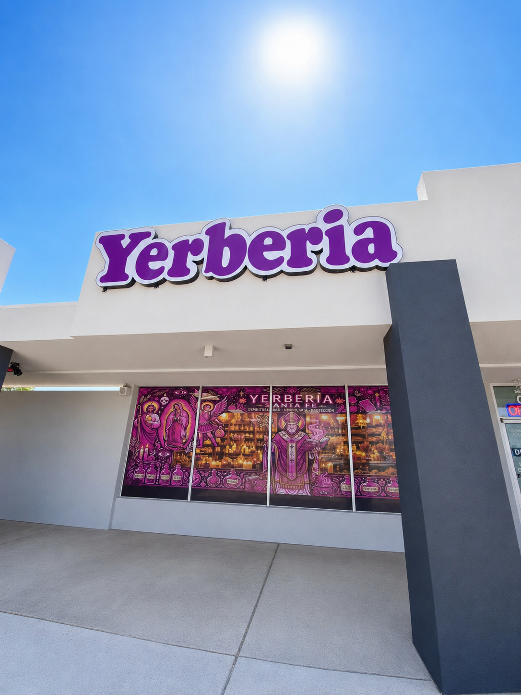

01
Albuquerque
800 Juan Tabo Blvd NE, Ste P
Albuquerque, NM 87123
- Hours
- Sunday–Friday
11:00 AM–6:00 PM
Closed Saturday - Contact
- (505) 490-2980
Herbs · Botánica · Wellness
A welcoming neighborhood botánica filled with tradition, intention and a little everyday magic.
After more than 15 years serving Santa Fe, we’re bringing the best of our selection to Albuquerque. Find religious goods of every kind, including candles, saints, devotional images and jewelry; herbs such as arnica, chamomile, cota, riñosán, osha, eucalyptus and much more; plus incense, oils and spiritual waters. If you have questions, call either of our two locations for more information.

Come say hello
01
800 Juan Tabo Blvd NE, Ste P
Albuquerque, NM 87123
02
1532 Cerrillos Rd
Santa Fe, NM 87505
Explore the shop
Whether you are honoring a tradition, refreshing your space or looking for a thoughtful gift, we are happy to help you find what feels right.
Devotional goods
Guidance · Tradition · Intention
Personal spiritual services offered with care and respect for tradition.
A little gift for you
Made with good intentions. Tap as often as your spirit needs.
Our herb collection
Search the herbs carried at Yerbería Santa Fe by name or traditional use.
Selection and availability may vary by location. Please call before visiting for a specific herb.